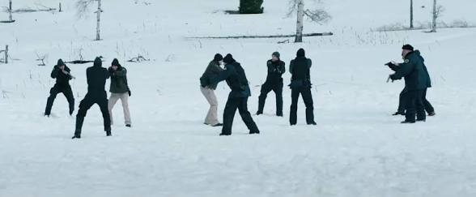

Wind River (2017) — CERTIFIED MGC MS-64

🏛 MGC SUPREME COURT OF CONSENSUS
- ASSET TITLE: Wind River (2017)
- OFFICIAL REGISTRY GRADE: Certified MGC MS-64 (Mint State Specimen)
- HIGH BENCH JURISDICTION: Supreme Court Vault / Winter Emergency Docket
- CASE FILE: #034
- PRESIDING PANEL: Judge Sally, Judge Dan (Chief of Forensics), Chief Grader MGC, and Chief Justice MGC
📜 THE INITIAL INQUEST BENCH ASSESSMENT (3-FLAW DEFECT LOG)
- Baseline Bench Assessment: Room Allocation ➔ MS-61 Mint State Specimen The film boasts exceptional technical luster and cinematography through its stark winter landscapes, yet closes out at an MS-61 grade due to three specific narrative and structural flaws:
1. The FBI Newbie Cliché Friction (Narrative Flaw)
- The Defect: Elizabeth Olsen’s character, Jane Banner, is introduced via standard Hollywood “fish-out-of-water” tropes.
- The Forensic Data: Arriving underdressed and unprepared for the harsh Wyoming environment and local culture feels like a predictable script shortcut that briefly disrupts the film’s grounded realism.
2. The Rapid Trailer-Park Flashback Strike (Structural Pacing Over-Strike)
- The Defect: The second-act flashback revealing the incident at the drill site creates a sudden momentum shift.
- The Forensic Data: While effective at resolving the mystery, the raw, abrupt violence acts as an explicit data-dump layout right before the climax, breaking the methodical real-time investigative perspective.
3. The “Flank Security” Tactical Loophole (Execution Blemish)
- The Defect: Local law enforcement and the FBI display a critical lack of tactical awareness during the climactic confrontation.
- The Forensic Data: Walking directly into a tight semicircle of armed security guards and allowing police vehicles to be flanked introduces a logic dent that pulls away from a flawless proof grade.
🚨 THE FINAL PACING PLANCHET SCUFF (THE MS-61 CAP)
4. The Third-Act Hospital Bed Exposition Drag
- The Defect: The post-climax sequence inside the hospital room introduces a minor localized momentum lag right before the final emotional payoff.
- The Forensic Data: After the blistering velocity of the drill-site shootout and the heavy emotional release of the mountain-top confrontation, the film spends a significant block of runtime with a wounded Jane Banner explaining her recovery and delivering thematic dialogue from her hospital bed. While essential for closing her character arc, this sequence creates a slight tracking inconsistency in the film’s circulation structure, cooling down the intense narrative heat signature just a hair too early before the final title card rolls.
⚖️ THE SUPREME OVERRULING & MS-64 FINAL ASSESSMENT
1. The FBI Newbie Cliché Friction: OVERRULED
- The Overruling Decree: The deployment of an unprepared rookie agent perfectly mirrors the systemic apathy and institutional neglect toward reservation jurisdictions.
2. The Rapid Trailer-Park Flashback Strike: OVERRULED
- The Overruling Decree: The structural shift mirrors an authentic investigative timeline. The crime is revealed seamlessly only once the forensic pieces are fully assembled to zero in on the suspects.
3. The “Flank Security” Tactical Loophole: OVERRULED
- The Overruling Decree: Tactical flanking was explicitly anticipated and call-outs were made in real-time. The wildlife resources tracker served as a strategic high-ground sniper fail-safe, executing the necessary tactical resets.
4. The Third-Act Hospital Bed Exposition Drag: SUSTAINED
- The Final Bench Rationale: The hospital sequence introduces a microscopic circulation cooldown that slightly relaxes the film’s tight atmospheric pressure right before the final closing frames.
⚖️ 🏆 FINAL COURT DECREE
- With all primary administrative flaws thrown out by the Chief Justice, Wind River is permanently sealed in the uncirculated registry as an elite MS-64 Choice Gem Specimen.
The Wyoming Winter Case File #034 is officially shut! ⚖️🏔️❄️✨

• © 2026 MOVIE GRADING CONSENSUS. All Sovereign Rights Reserved.